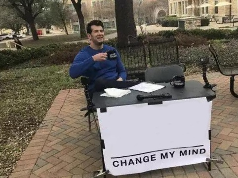
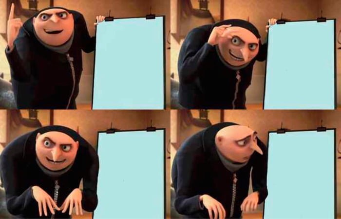
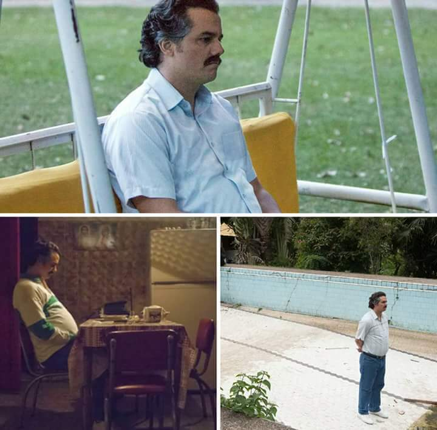
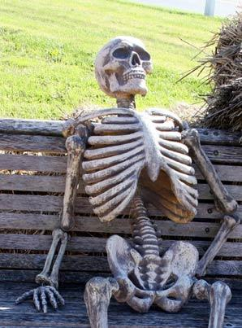
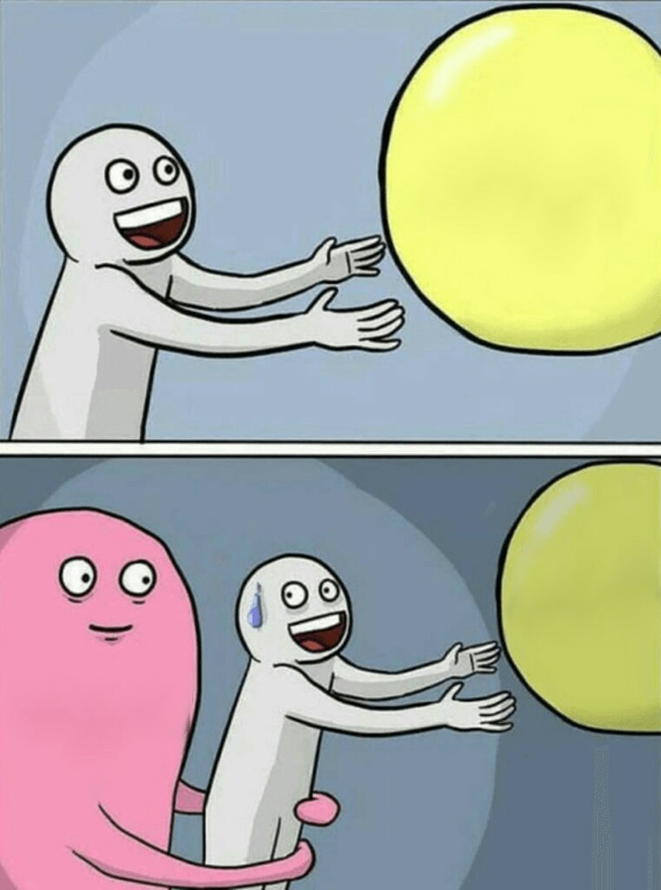
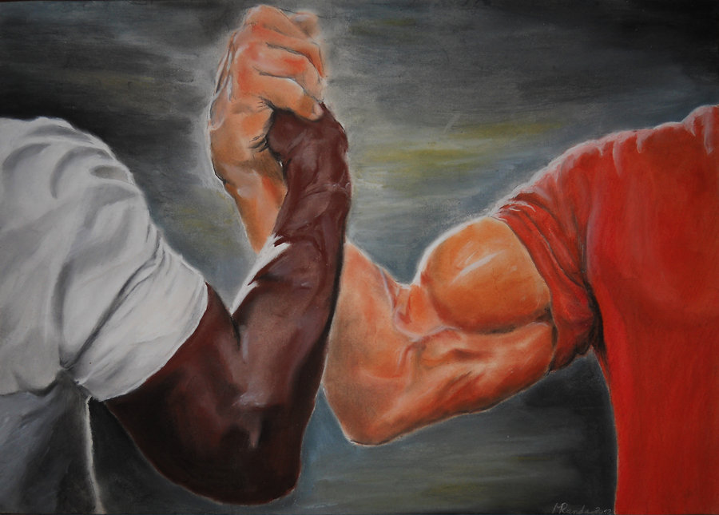

— Of First and Last Things —

Seeking eternal metaphysical truths
Doing the chemistry of concepts and sensations
Nietzsche — Chemistry of Concepts
“Everything has become: there are no eternal facts, just as there are no absolute truths”

The world has meaning
The world might have meaning
Meaning is a human projection
The question of meaning is itself meaningless
Nietzsche — Meaning All the Way Down
“Everything absolute belongs to pathology”

Empirical observation
Nietzsche in 1878
Metaphysical speculation
Nietzsche — Nietzsche's 1878 Breakup
“Everything has become: there are no eternal facts, just as there are no absolute truths”

There are no eternal facts, only interpretations
Nietzsche — No Eternal Facts
“All things are subject to interpretation; whichever interpretation prevails at a given time is a function of power and not truth”
Wait, our deepest convictions are just inherited habits?
Always have been
Nietzsche — Inherited Habits
“Every tradition grows ever more venerable -- the more remote its origin, the more confused that origin is”

But what about the thing-in-itself--
There IS no thing-in-itself
Nietzsche — No Thing-in-Itself
“The irrationality of a thing is no argument against its existence, rather a condition of it”

Can't be wrong about metaphysics
If you stop doing metaphysics entirely
Nietzsche — Can't Lose at Metaphysics
“In the mountains of truth you never climb in vain”

Every belief you held since childhood is wrong
This is fine, I'm a free spirit now
Nietzsche — Free Spirit Initiation
“Convictions are more dangerous enemies of truth than lies”

Carefully examine my inherited convictions
Burn them all down and start over
Nietzsche — Burn the Convictions
“Convictions are more dangerous enemies of truth than lies”

Having opinions
Having a chemistry of concepts and sensations
Nietzsche — Elevated Opinions
“Everything has become: there are no eternal facts, just as there are no absolute truths”

One does not simply
Abandon two thousand years of metaphysics before breakfast
Nietzsche — Metaphysics Before Breakfast
“When we are tired, we are attacked by ideas we conquered long ago”

I think therefore I am
The 'I' is just a grammatical habit
'Thinking' is a word for what we don't understand
Descartes was wrong about every word
Nietzsche — Cogito Ergo Clown
“Logic too rests on assumptions that do not correspond to anything in the real world”

I bet he's thinking about other women
If dreams shaped ancient metaphysics, what are mine shaping?
Nietzsche — Dream Metaphysics
“In ages of crude culture man believed that in dreams he got to know a second real world”

Metaphysics might be completely false
At least morality is eternal and certain
Morality also has a history
Nietzsche — Nothing Is Safe
“Everything has become: there are no eternal facts, just as there are no absolute truths”

I'm examining the origins of all our concepts
And they're divinely inspired, right?
Right?
Nietzsche — Origins of Concepts
“Everything has become: there are no eternal facts, just as there are no absolute truths”

Develop a philosophy that questions everything
Systematically demolish all metaphysics
My own philosophy must also be questioned
My own philosophy must also be questioned
Nietzsche — Self-Devouring Philosophy
“In the mountains of truth you never climb in vain”

Things just are what they are
The noumenal realm transcends phenomenal reality via dialectical synthesis
Things just are what they are
Nietzsche — Things Just Are
“Everything absolute belongs to pathology”

Ancient thinkers
Dreams are messages from a higher reality
Nietzsche
Dreams are your brain doing weird stuff at night
Nietzsche — Dream Interpretation
“In ages of crude culture man believed that in dreams he got to know a second real world”
— On the History of Moral Sensations —

Your moral convictions are just inherited prejudices
Smiling because free spirits don't cry
Nietzsche — The Bitterest Drop
“The complete irresponsibility of man for his actions and his nature is the bitterest drop the man of knowledge must swallow”

You can't say morality is a historical accident!
Your outrage about it is also a historical accident
Nietzsche — Historical Accident
“Everything has become: there are no eternal facts, just as there are no absolute truths”
My moral feelings come from the depths of my soul
mY mOrAl fEeLiNgS cOmE fRoM tHe DePtHs oF mY sOuL
Nietzsche — Deep Moral Feelings
“The complete irresponsibility of man for his actions and his nature is the bitterest drop the man of knowledge must swallow”

Tracing the history of your deepest moral conviction
It was invented to benefit the powerful
Nietzsche — Origins of Your Morality
“All things are subject to interpretation; whichever interpretation prevails at a given time is a function of power and not truth”

Waiting for someone to justify morality without history
Still waiting since 1878
Nietzsche — Objective Morality
“The man of knowledge must be able not only to love his enemies but also to hate his friends”

Calling others evil
Projecting your own insecurity
Nietzsche — Calling Others Evil
“Anyone who has declared someone else to be an idiot is annoyed when it turns out in the end that he isn't”

Your blind obedience to inherited morality
The comforting illusion of moral certainty
Society
Nietzsche — Society's Deal
“Convictions are more dangerous enemies of truth than lies”

Moral philosophers
A culturally inherited prejudice
Is this an eternal truth?
Nietzsche — Eternal Truth Discovery
“Everything has become: there are no eternal facts, just as there are no absolute truths”
I am once again asking
People to examine why they believe what they believe
Nietzsche — Examine Your Beliefs
“The surest way to corrupt a youth is to instruct him to hold in higher esteem those who think alike than those who think differently”

Set fire to two thousand years of moral philosophy
Called it 'psychological observation'
Nietzsche — Observation Not Arson
“Psychological observation is one of the means by which man can ease life's burden”
Continuing to believe in transcendent morality
Admitting it's all just inherited habit
Nietzsche — The Exit to Honesty
“Convictions are more dangerous enemies of truth than lies”
Judging actions as simply good or evil
Investigating why we judge them that way
Nietzsche — Judging vs Investigating
“The man of knowledge must be able not only to love his enemies but also to hate his friends”

Humanity
Objective moral foundations
Nietzsche — Moral Foundations Floating Away
“Everything has become: there are no eternal facts, just as there are no absolute truths”

Examine the embarrassing origins of your moral feelings
Moral philosophers
Nietzsche — Embarrassing Origins
“Psychological observation is one of the means by which man can ease life's burden”

Claiming their morality is objective
Religious thinkers
Secular humanists
Nietzsche — Objective Morality Club
“Everything absolute belongs to pathology”

All moral feelings have historical origins
My personal morality is somehow the exception
Nietzsche — The Moral Exception
“Convictions are more dangerous enemies of truth than lies”
Stealing is wrong because God says so
Stealing is wrong because of the social contract
Stealing is wrong because of evolved cooperation
We call it 'wrong' because it threatened the powerful
Nietzsche — Why Stealing Is Wrong
“All things are subject to interpretation; whichever interpretation prevails at a given time is a function of power and not truth”
Y'all got any more of that
Unexamined moral certainty
Nietzsche — Moral Certainty Withdrawal
“Convictions are more dangerous enemies of truth than lies”
— Religious Life —
Psychology of religion
Nietzsche
Actual religious devotion
Nietzsche — Psychology Over Piety
“There is not enough love and goodness in the world to permit giving any of it away to imaginary beings”
Religious feelings are just psychology in a costume
Nietzsche — Religion Is Psychology
“There is not enough love and goodness in the world to permit giving any of it away to imaginary beings”
Wait, religious ecstasy is just a neurological event?
Always has been
Nietzsche — Neurological Ecstasy
“There is not enough love and goodness in the world to permit giving any of it away to imaginary beings”
But God created the moral law--
You created God to justify the moral law
Nietzsche — Who Created Whom
“There is not enough love and goodness in the world to permit giving any of it away to imaginary beings”
Can't waste love on imaginary beings
If you redirect it to actual humans
Nietzsche — Love Reallocation
“There is not enough love and goodness in the world to permit giving any of it away to imaginary beings”
All your religious feelings have natural causes
This is fine, I have science now
Nietzsche — Natural Causes Only
“Everything absolute belongs to pathology”
Respect other people's religious beliefs
Ask them where those beliefs actually came from
Nietzsche — Respect vs. Question
“Convictions are more dangerous enemies of truth than lies”
Praying to God for strength
Recognizing the strength was yours all along
Nietzsche — The Strength Was Yours
“There is not enough love and goodness in the world to permit giving any of it away to imaginary beings”
One does not simply
Tell a saint their suffering was just bad psychology
Nietzsche — Breaking It to Saints
“In reality, hope is the worst of all evils, because it prolongs the torments of man”
Deny yourself all earthly pleasure
Call the self-denial a virtue
Expect a cosmic reward for your suffering
Die and discover there was no reward
Nietzsche — The Ascetic's Journey
“In reality, hope is the worst of all evils, because it prolongs the torments of man”
I bet he's thinking about other women
If we gave imaginary beings less love, would real people get more?
Nietzsche — Love Budget
“There is not enough love and goodness in the world to permit giving any of it away to imaginary beings”
God might not exist
But religious feeling is real and powerful
Religious feeling has perfectly natural explanations
Nietzsche — God Might Not Exist
“There is not enough love and goodness in the world to permit giving any of it away to imaginary beings”
I found the psychological origin of religious feeling
So we can appreciate religion even more, right?
Right?
Nietzsche — Psychology of Faith
“There is not enough love and goodness in the world to permit giving any of it away to imaginary beings”
Build entire life around religious devotion
Sacrifice all earthly pleasures for heavenly reward
Discover heaven was a human invention
Discover heaven was a human invention
Nietzsche — The Devotee's Plan
“In reality, hope is the worst of all evils, because it prolongs the torments of man”
Spent 30 years as an ascetic for a God who doesn't exist
At least I have great self-discipline
Nietzsche — 30 Years of Asceticism
“In reality, hope is the worst of all evils, because it prolongs the torments of man”
Without God there's no basis for morality!
Your morality existed before your God did
Nietzsche — Morality Before God
“Everything has become: there are no eternal facts, just as there are no absolute truths”
I feel God's presence in my heart
i fEeL gOd'S pReSeNcE iN mY hEaRt
Nietzsche — God's Presence
“There is not enough love and goodness in the world to permit giving any of it away to imaginary beings”
— From the Souls of Artists and Writers —
Thinking you're divinely inspired to create art
Finding out it's just ten thousand hours of practice
Nietzsche — 10,000 Hours of Sadness
“Do not talk about giftedness, inborn talents! One can name great men of all kinds who were very little gifted”
Waiting for the Muse to inspire my masterpiece
The Muse was hard work all along
Nietzsche — Waiting for the Muse
“Do not talk about giftedness, inborn talents! One can name great men of all kinds who were very little gifted”
Genius
Relentless practice that people mythologized
Nietzsche — Genius Unmasked
“Do not talk about giftedness, inborn talents! One can name great men of all kinds who were very little gifted”
Worship of my genius
Never learning I just practiced a lot
Artists
Nietzsche — The Artist's Bargain
“The best author will be the one who is ashamed to become a writer”
The adoring public
Years of grinding and practice
Is this divine inspiration?
Nietzsche — Divine Inspiration Discovery
“Do not talk about giftedness, inborn talents! One can name great men of all kinds who were very little gifted”
I am once again asking
Artists to admit their work is craft, not divine visitation
Nietzsche — Admit It's Craft
“A good writer possesses not only his own spirit but also the spirit of his friends”
Destroyed the entire myth of artistic genius
Called it a compliment to human effort
Nietzsche — Genius Myth Destroyed
“Do not talk about giftedness, inborn talents! One can name great men of all kinds who were very little gifted”
Admitting art requires hard work and discipline
Pretending you're channeling divine inspiration
Nietzsche — Inspiration vs. Discipline
“The best author will be the one who is ashamed to become a writer”
Waiting for divine inspiration to strike
Sitting down and doing the work every single day
Nietzsche — Daily Practice
“Do not talk about giftedness, inborn talents! One can name great men of all kinds who were very little gifted”
Artists
The myth of effortless genius
Nietzsche — Effortless Genius Escapes
“Do not talk about giftedness, inborn talents! One can name great men of all kinds who were very little gifted”
Art is divine inspiration
Art is pure emotional expression
Art is skilled craftsmanship
Art is what happens when you practice for years and lie about it
Nietzsche — What Art Really Is
“Do not talk about giftedness, inborn talents! One can name great men of all kinds who were very little gifted”
Honest artists
My work comes from discipline and daily effort
Mythologized geniuses
The muse just... speaks through me
Nietzsche — Honest vs. Mythologized
“A good writer possesses not only his own spirit but also the spirit of his friends”
Admit your talent is just years of disciplined practice
Every artist ever
Nietzsche — Admit It's Practice
“Do not talk about giftedness, inborn talents! One can name great men of all kinds who were very little gifted”
Psychology of artistic creation
Nietzsche
Romantic worship of genius
Nietzsche — Nietzsche on Artists
“The best author will be the one who is ashamed to become a writer”
Genius is just practice nobody saw plus good marketing
Nietzsche — Genius Is Marketing
“Do not talk about giftedness, inborn talents! One can name great men of all kinds who were very little gifted”
Y'all got any more of that
Honest discussion of how art actually gets made
Nietzsche — Honest Art Discussion
“A good writer possesses not only his own spirit but also the spirit of his friends”
Art requires genius you either have or don't
Art requires work anyone could theoretically do
Nietzsche — Talent vs. Work
“Do not talk about giftedness, inborn talents! One can name great men of all kinds who were very little gifted”
Wait, all great art is just skilled craftsmanship?
Always has been
Nietzsche — Art Was Always Craft
“Do not talk about giftedness, inborn talents! One can name great men of all kinds who were very little gifted”
— Tokens of Higher and Lower Culture —
But my conviction is based on deep feeling--
Convictions are more dangerous than lies
Nietzsche — Convictions Get Slapped
“Convictions are more dangerous enemies of truth than lies”
Can't have false convictions
If you treat all convictions with suspicion
Nietzsche — Suspicion as Method
“Convictions are more dangerous enemies of truth than lies”
Replacing comforting grand truths with uncomfortable small ones
This is fine, truth has no ego
Nietzsche — Small Truths, No Ego
“In the mountains of truth you never climb in vain”
Accept the small, boring truths of science
Retreat to the grand, beautiful lies of metaphysics
Nietzsche — Grand Beautiful Lies
“In the mountains of truth you never climb in vain”
Having strong convictions
Having the method of doubt as a lifelong practice
Nietzsche — Method Over Conviction
“Convictions are more dangerous enemies of truth than lies”
One does not simply
Build a higher culture without free spirits who question everything
Nietzsche — Free Spirits Required
“The surest way to corrupt a youth is to instruct him to hold in higher esteem those who think alike than those who think differently”
I'm totally open-minded
Except about things I feel strongly about
Which is basically everything important
So I'm open-minded about nothing that matters
Nietzsche — Open-Minded About Nothing
“Convictions are more dangerous enemies of truth than lies”
I bet he's thinking about other women
Are small truths more valuable than grand illusions?
Nietzsche — Small Truths vs Grand Illusions
“In the mountains of truth you never climb in vain”
Free spirits are questioning all traditions
But tradition holds society together
The traditions were wrong anyway
Nietzsche — Tradition Under Fire
“Every tradition grows ever more venerable -- the more remote its origin, the more confused that origin is”
I'm going to become a free spirit
And society will celebrate your independence, right?
Right?
Nietzsche — Free Spirit Loneliness
“The surest way to corrupt a youth is to instruct him to hold in higher esteem those who think alike than those who think differently”
Teach critical thinking to everyone
Watch people question inherited beliefs
They start questioning YOUR beliefs too
They start questioning YOUR beliefs too
Nietzsche — Critical Thinking Backfires
“The surest way to corrupt a youth is to instruct him to hold in higher esteem those who think alike than those who think differently”
Just live and don't overthink it
We must evaluate all cultural tokens through critical methodological frameworks
Just live and don't overthink it
Nietzsche — Just Live
“Everything absolute belongs to pathology”
Becoming a free spirit and losing all your friends
At least I have intellectual integrity
Nietzsche — Free Spirit, No Friends
“The man of knowledge must be able not only to love his enemies but also to hate his friends”
You're destroying everything we believe in!
I'm literally just asking questions
Nietzsche — Just Asking Questions
“Convictions are more dangerous enemies of truth than lies”
You need strong convictions to be a serious thinker
yOu nEeD sTrOnG cOnViCtIoNs tO bE a SeRiOuS tHiNkEr
Nietzsche — Strong Convictions Needed
“Convictions are more dangerous enemies of truth than lies”
Learning that grand cultural truths are comforting lies
And the real truths are boring and small
Nietzsche — Boring but Real
“In the mountains of truth you never climb in vain”
Waiting for culture to value small truths over grand narratives
Still waiting since 1878
Nietzsche — Culture Valuing Truth
“In the mountains of truth you never climb in vain”
People clinging to convictions
People clinging to comfortable lies
Nietzsche — Convictions Are Lies
“Convictions are more dangerous enemies of truth than lies”
— Man in Society —
Your authentic self
Social rejection and loneliness
Authenticity
Nietzsche — Society's Bargain
“No one talks more passionately about his rights than he who in the depths of his soul doubts whether he has any”
Everyone in society
A carefully constructed social mask
Is this my authentic personality?
Nietzsche — Authentic Personality
“A man far oftener appears to have a decided character from following his temperament than from following his principles”
I am once again asking
People to stop confusing politeness with sincerity
Nietzsche — Politeness vs. Sincerity
“Arrogance on the part of the meritorious is even more offensive to us than the arrogance of those without merit”
Burned all my social bridges
Called it living authentically
Nietzsche — Living Authentically
“The man of knowledge must be able not only to love his enemies but also to hate his friends”
Maintaining comfortable social lies
Telling people exactly what you think of them
Nietzsche — Honesty Exit
“The man of knowledge must be able not only to love his enemies but also to hate his friends”
Saying what people want to hear
Saying what you actually think and losing everyone
Nietzsche — Losing Friends for Truth
“The man of knowledge must be able not only to love his enemies but also to hate his friends”
Never saying what they actually mean
Introverts
Polite society
Nietzsche — Never Saying What You Mean
“Arrogance on the part of the meritorious is even more offensive to us than the arrogance of those without merit”
Being honest
Being politely dishonest
Being dishonestly polite
Talking about yourself constantly to hide yourself
Nietzsche — Levels of Social Dishonesty
“No one talks more passionately about his rights than he who in the depths of his soul doubts whether he has any”
Brutal honesty
Free spirits
Comfortable social conventions
Nietzsche — Free Spirit Honesty
“Arrogance on the part of the meritorious is even more offensive to us than the arrogance of those without merit”
Ancient friendship
Tested through shared suffering and hardship
Modern friendship
Tested by who likes whose posts
Nietzsche — Ancient vs. Modern Friendship
“Anyone who has declared someone else to be an idiot is annoyed when it turns out in the end that he isn't”
Wait, everyone in society is performing a character?
Always has been
Nietzsche — Everyone Is Performing
“A man far oftener appears to have a decided character from following his temperament than from following his principles”
Learn to see through social masks
Understand everyone's true motivations
Nobody likes you, they like your mask
Nobody likes you, they like your mask
Nietzsche — Seeing Through Masks
“No one talks more passionately about his rights than he who in the depths of his soul doubts whether he has any”
I'm totally authentic on social media
My curated feed shows the real me
I only share my genuine reactions
Everything I post is a performance
Nietzsche — Authentic on Social Media
“No one talks more passionately about his rights than he who in the depths of his soul doubts whether he has any”
But I'm just being honest--
You're being vain about your honesty
Nietzsche — Vanity About Honesty
“Arrogance on the part of the meritorious is even more offensive to us than the arrogance of those without merit”
Can't be accused of vanity
If you're vain about not being vain
Nietzsche — Meta-Vanity
“Arrogance on the part of the meritorious is even more offensive to us than the arrogance of those without merit”
Gossiping about people behind their backs
Engaging in psychological observation of social dynamics
Nietzsche — Gossiping Refined
“Psychological observation is one of the means by which man can ease life's burden”
Everyone at the party is wearing a social mask
This is fine, so am I
Nietzsche — Masks All the Way Down
“A man far oftener appears to have a decided character from following his temperament than from following his principles”
— Woman and Child —
Reading Nietzsche's chapter on women in 2024
He can't keep getting away with this
Nietzsche — Reading the Women Chapter
“Woman learns how to hate in proportion as she forgets how to charm”
Your views on women are 150 years outdated!
They were outdated when I wrote them, honestly
Nietzsche — 150 Years Outdated
“Woman learns how to hate in proportion as she forgets how to charm”
Nietzsche had profound insights about gender
nIeTzScHe hAd PrOfOuNd iNsIgHtS aBoUt gEnDeR
Nietzsche — Profound Gender Insights
“Woman learns how to hate in proportion as she forgets how to charm”
Writing a brilliant book about freedom of thought
Then including the chapter on women
Nietzsche — Brilliant Book, One Chapter
“Woman learns how to hate in proportion as she forgets how to charm”
Waiting for the chapter on women to age well
Still waiting, it's getting worse
Nietzsche — Aging Like Milk
“Woman learns how to hate in proportion as she forgets how to charm”
Nietzsche critiquing women's irrationality
Nietzsche writing emotional letters to Lou Salome
Nietzsche — Nietzsche vs. Nietzsche
“Everything absolute belongs to pathology”
Your entire identity and independence
Social respectability through marriage
19th century society
Nietzsche — 19th Century Marriage
“When entering into a marriage one ought to ask: do you believe you will enjoy talking with this person into your old age?”
Nietzsche, age 34
His own romantic failures
Is this a philosophical insight about women?
Nietzsche — Philosophy or Cope
“When we are tired, we are attacked by ideas we conquered long ago”
I am once again asking
You to skip this chapter when recommending the book
Nietzsche — Skip This Chapter
“Woman learns how to hate in proportion as she forgets how to charm”
Nietzsche's reputation with modern readers
After they read the chapter on women
Nietzsche — Reputation Destroyed
“Woman learns how to hate in proportion as she forgets how to charm”
Applying the free spirit method to your own gender biases
Writing a whole chapter of gender stereotypes
Nietzsche — Free Spirit Except
“Convictions are more dangerous enemies of truth than lies”
Questioning inherited prejudices about morality and religion
Repeating inherited prejudices about women
Nietzsche — Selective Skepticism
“Convictions are more dangerous enemies of truth than lies”
Marriage is mostly just a very long conversation, choose wisely
Nietzsche — Marriage Is Conversation
“When entering into a marriage one ought to ask: do you believe you will enjoy talking with this person into your old age?”
Marriage is about love
Marriage is about social status
Marriage is about economic partnership
Marriage is mostly just a very long conversation
Nietzsche — What Marriage Really Is
“When entering into a marriage one ought to ask: do you believe you will enjoy talking with this person into your old age?”
Nietzsche is writing about women
Maybe he has a nuanced philosophical point
Nope, it's just 19th century sexism
Nietzsche — The Gender Chapter
“When we are tired, we are attacked by ideas we conquered long ago”
I'm applying radical skepticism to all social conventions
Including gender conventions, right?
Right?
Nietzsche — Radical Skepticism Limit
“Convictions are more dangerous enemies of truth than lies”
Question all inherited beliefs without exception
Except the ones about gender that feel right
Nietzsche — The Free Spirit Exception
“Convictions are more dangerous enemies of truth than lies”
— A Glance at the State —
Let culture flourish independently of the state
Use the state to control what people think
Nietzsche — State vs. Culture
“Culture and the state are antagonists”
One does not simply
Build a great culture through nationalism and state power
Nietzsche — Nationalism Doesn't Build Culture
“Culture and the state are antagonists”
I bet he's thinking about other women
Would culture be better if the state just got out of the way?
Nietzsche — State Out of the Way
“Culture and the state are antagonists”
Greek city-states
Small, competitive, culturally explosive
Modern nation-states
Massive, bureaucratic, culturally stagnant
Nietzsche — City-States vs. Nation-States
“Every tradition grows ever more venerable -- the more remote its origin, the more confused that origin is”
Strong state that controls everything
Great culture that needs freedom to flourish
Nietzsche — State Power vs. Culture
“Culture and the state are antagonists”
Politics is dumb
We need sophisticated political theory combining democratic ideals with institutional safeguards
Politics is dumb
Nietzsche — Politics Is Dumb
“Everything absolute belongs to pathology”
Nationalism is silly
National identity provides essential existential meaning through shared cultural heritage
Nationalism is silly
Nietzsche — Nationalism Seen Through
“Every tradition grows ever more venerable -- the more remote its origin, the more confused that origin is”
Nationalists
Actual cultural achievement
Nietzsche — Nationalists Lose Culture
“Culture and the state are antagonists”
Democratic politicians
The free spirits they claim to represent
Nietzsche — Politicians Lose Free Spirits
“The surest way to corrupt a youth is to instruct him to hold in higher esteem those who think alike than those who think differently”
Let culture develop independently of state power
Every government ever
Nietzsche — Governments vs. Culture
“Culture and the state are antagonists”
Admit nationalism is just another inherited prejudice
19th century Europeans
Nietzsche — Admitting Nationalism Is Prejudice
“Convictions are more dangerous enemies of truth than lies”
Y'all got any more of that
State power disguised as cultural pride
Nietzsche — State Power in Disguise
“Culture and the state are antagonists”
Y'all got any more of that
Freedom from nationalist fairy tales
Nietzsche — Freedom from Fairy Tales
“Every tradition grows ever more venerable -- the more remote its origin, the more confused that origin is”
Thinking the state exists to serve them
Socialists
Nationalists
Nietzsche — Left and Right Agree
“Socialism is the visionary younger brother of an almost spent despotism”
Using 'the people' to justify state power
Left-wing politics
Right-wing politics
Nietzsche — Using the People
“All things are subject to interpretation; whichever interpretation prevails at a given time is a function of power and not truth”
Total individual freedom
Free spirits
Comfortable nationalism
Nietzsche — Freedom Over Comfort
“The surest way to corrupt a youth is to instruct him to hold in higher esteem those who think alike than those who think differently”
The state is the enemy of culture, not its patron
Nietzsche — State Is Culture's Enemy
“Culture and the state are antagonists”